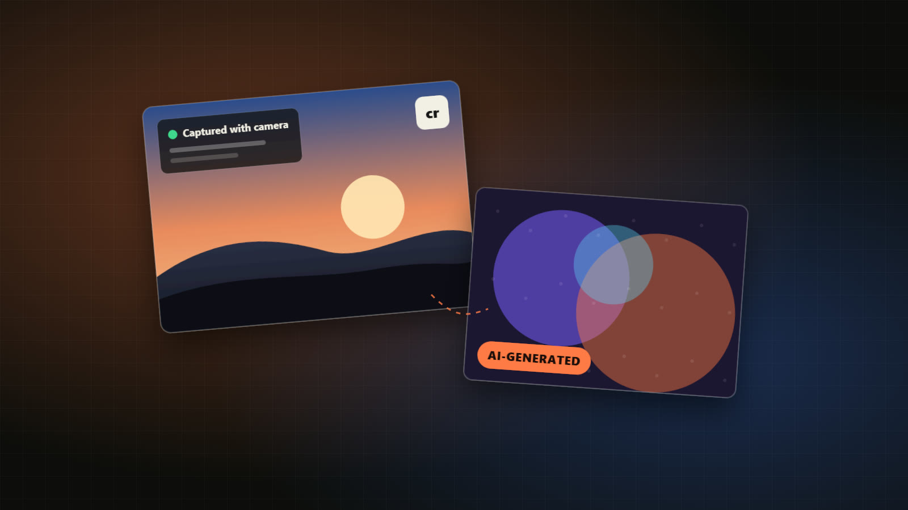

AI Labels and Content Credentials: What the New Rules Mean for Your Photos

Scroll any feed in late 2026 and you will see small tags that were rare a year ago: "AI-generated", "Made with AI", or a tiny cr pin in the corner of a photo. They are the visible side of a big shift in how images are made and shared. New rules in the European Union now require AI-generated content to carry a label, and phone makers, AI companies and social networks are adding hidden "proof of origin" data to pictures.
This guide explains, in plain language, what changed, how these labels work behind the scenes, and what it means for the everyday photos, screenshots and graphics you edit and share.
1. What changed in 2026?
The biggest change is legal. Article 50 of the EU's AI Act, its transparency rule, has applied since 2 August 2026. In short, it says:
- Companies that build generative AI tools must mark what the tool creates (images, video, audio and text) in a machine-readable way, so the content can be detected as AI-generated or AI-manipulated.
- People and businesses that publish deepfakes (realistic AI images, audio or video of real people, places or events) must disclose that the content is AI-generated or manipulated.
- AI-written text published to inform the public on matters of public interest must be disclosed too, unless a person has reviewed it and someone takes editorial responsibility for it.
There is a short grace period. AI tools that were already on the market before 2 August 2026 have until 2 December 2026 to add the machine-readable marking. After that date the marking rule applies to all of them.
To help companies comply, the European Commission published a voluntary Code of Practice on transparency of AI-generated content on 10 June 2026. One part covers how AI providers should mark and detect content; the other covers how publishers should label deepfakes and AI-written text, including a set of EU icons they can use. According to the Commission, around 190 organisations had signed it by the end of July 2026.
The rules are aimed at AI providers and at people who publish deepfakes, not at someone using autofocus or fixing a photo's brightness. Article 50 exempts AI that only performs an assistive function for standard editing, or that does not substantially change the content or its meaning.
2. The three kinds of "labels" you will meet
"AI label" can mean three quite different things, and they behave very differently when you edit a file:
- Visible labels: the "AI-generated" tag a platform or publisher shows next to a post, or a caption or icon on the image itself. Anyone can see it, and anyone can also crop it out.
- Content Credentials (C2PA metadata): a signed record stored inside the file, based on an open standard from the Coalition for Content Provenance and Authenticity (C2PA). It can say which camera or app created the image, whether AI was used, and what edits were made. Viewers that support it show the cr pin, and you can inspect a file at contentcredentials.org/verify. Google's Pixel 10 was the first phone to add Content Credentials to photos in its built-in camera app.
- Invisible watermarks: tiny changes woven into the pixels themselves, such as Google DeepMind's SynthID. You cannot see them, but a detector can. Because they live in the pixels rather than in a metadata block, they are designed to survive common edits like resizing and compression.
Most serious systems combine the last two: signed metadata that tells the full story, plus an invisible watermark as a backup in case the metadata is lost.
3. Why Content Credentials disappear so easily
Content Credentials are stored in the file's metadata, alongside things like the EXIF data we covered in our EXIF privacy guide. That makes them fragile. They are usually lost when:
- you take a screenshot of the image,
- an app or website re-encodes the file, for example a converter, compressor or many upload pipelines,
- an editor that does not understand C2PA saves a new copy.
This has two important consequences:
- A missing label proves nothing. Most photos online have no Content Credentials at all, simply because the camera, app or platform never added them or removed them along the way. "No credentials" does not mean "fake", and it does not mean "real" either.
- A valid credential is meaningful. If a file still carries an intact, verified credential, you can see who signed it and what they say happened to it. That is why newsrooms and photographers are adopting it.
A note about our own tools: PicsConvert converts, compresses and resizes images by redrawing the pixels in your browser. That is what removes private EXIF data such as GPS location, and it removes Content Credentials in the same way. If you need to keep a photo's credentials (for example, to prove a news photo is authentic), share the original file, or edit it in an app that supports C2PA.
4. What this means for you
If you share everyday photos
Nothing changes for normal phone photos, edits and filters. Basic fixes such as cropping, brightness, red-eye removal or resizing do not need an AI label. Your privacy still matters, though, so strip location data before you post pictures taken at home.
If you create images with AI
Expect the tools you use to add labels automatically, if they don't already. If you publish realistic AI images or video of real people or events, label them. In the EU that is now a legal duty for deepfakes, and most major platforms have similar rules. Obviously artistic, satirical or fictional work only needs a light-touch disclosure that does not spoil the work.
If you run a business, shop or website
- Keep a simple record of which product photos, banners and ads were made or heavily changed with AI.
- Check whether your AI tools' terms say they mark output, and do not strip those marks on purpose.
- If you publish AI-written articles on public-interest topics, have a person review them and take editorial responsibility, or disclose that AI wrote them.
- Use the original, credentialed file for press and legal purposes; use optimised copies only for speed on your website.
About removing watermarks
Watermark removal tools, including our own, are meant for your own images: an old logo, a date stamp, or a mark an app added to a video you made. Using them to hide the fact that an image is AI-generated, or to take someone else's work, is a different matter. It can break copyright law and platform rules and, for publishers in the EU, the AI Act's disclosure duties. Invisible watermarks like SynthID are also built to survive this kind of editing, so the AI origin can often still be detected.
5. How to check where an image came from
- Look for the cr pin or an "AI info" label on the platform where you saw the image, and tap it to see the details.
- Upload the file to a Content Credentials checker such as contentcredentials.org/verify. It works best with the original file rather than a screenshot.
- Use reverse image search to find older or original copies, and see who first published it.
- Check the context: who posted it, when, and whether trusted outlets show the same scene.
- Remember the limits: no single check is proof. Treat labels as useful evidence, not a final verdict.
Conclusion
2026 is the year image labels went from optional to expected. EU rules now require AI content to be marked and deepfakes to be disclosed, and Content Credentials and invisible watermarks are spreading through phones, AI tools and social networks. The technology is still uneven: metadata is easily lost, and a missing label means very little. For most people the practical advice is simple: label AI images you publish, keep the original files when proof matters, and don't treat any single label, or its absence, as the whole story.